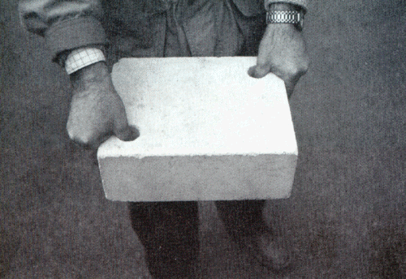
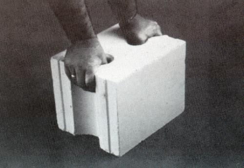
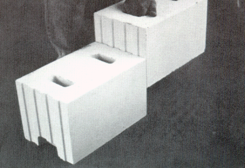
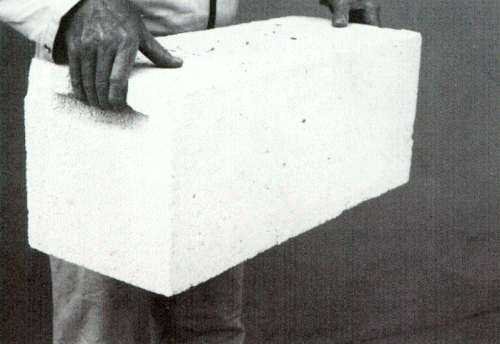
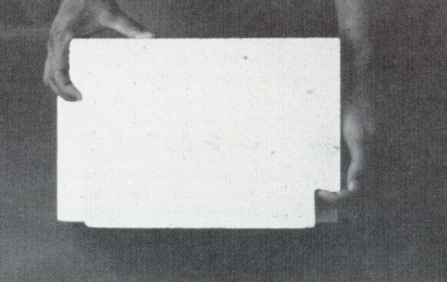
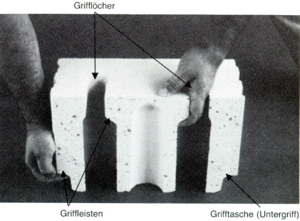

2.4 Griffhilfen sind in oder an Mauersteinen
vorhandene Öffnungen, Schlitze oder Aussparungen
(Grifflöcher, Grifftaschen, Griffleisten), die aufgrund ihrer
Anordnung und Formgebung das Ergreifen, Umsetzen und Vermauern der
Steine ermöglichen oder erleichtern.
2.4.1 Grifflöcher sind in der Oberseite von
Mauersteinen vorhandene Öffnungen, in Gestalt von
- Daumengrifflöchern für den Daumen einer Hand (siehe
Bilder 4 und 5)
oder
- 4-Fingergrifflöchern für die vier Finger einer Hand
(siehe Bilder 2, 3 und 6).

Bild 4: 5DF-Zweihandstein mit zwei Daumen-Grifflöchern

Bild 5: 10DF-Zweihandstein mit zwei Daumen-Grifflöchern
und Grifftaschen

Bild 6: 10DF-Zweihandstein mit 4-Finger-Grifflöchern
und Grifftaschen als Untergriff
2.4.2 Grifftaschen sind in den
Stoßfugenseiten von Zweihandsteinen vorhandene Vertiefungen
(siehe Abschnitt 3 und Bilder 5, 6, 7, 8 und 9).
Grifftaschen können in der Nähe der Steinoberseite
(Deckelseite) oder auch an der Steinunterseite (als sogenannter
Untergriff) angeordnet sein.
Grifftaschen bewirken aufgrund ihrer Formgebung, daß die
zum Anheben und Halten des Mauersteins erforderliche Kraft nicht
ausschließlich kraftschlüssig (durch Reibung) zwischen
den Fingern bzw. dem Daumen und dem Stein, sondern auch
formschlüssig übertragen wird. Der Mauerstein
"hängt" dann gewissermaßen wegen der Formgebung der
Grifftaschen an den Fingern bzw. zwischen Daumen und Fingern in der
Hand. Die aufzuwendende Muskelkraft wird auf diese Weise vermindert
und die Arbeit erleichtert.

Bild 7: Zweihandstein mit Grifftaschen

Bild 8: Schnitt eines Zweihandsteines mit ergonomisch
günstig angeordneten und gestalteten Grifftaschen
2.4.3 Griffleisten sind handgerechte Ausformungen an
Grifflöchern oder Grifftaschen, an denen die Fingerendglieder
Kontakt mit dem Mauerstein haben.

Bild 9: Schnitt eines Zweihandsteines mit Griffleisten an
den Grifftaschen und in den Grifflöchern.
Die beste Formgebung der Griffleiste ist dann gegeben, wenn die
Finger die Vorderkante der Griffleiste aufgrund einer
Hinterschneidung umgreifen können (siehe Bilder 8 und 9).
Dadurch wird der Formschluß an Grifflöchern oder
Grifftaschen verbessert und die Gefahr, daß die Finger
abrutschen, verringert.
2.5 Greifwerkzeuge sind mit zwei Handgriffen
versehene Handwerkzeuge, die zum beidhändigen Greifen und
Versetzen von Zweihandsteinen bestimmt sind.
2.6 Versetzgeräte und -maschinen sind
technische Arbeitsmittel, die zum maschinellen Aufnehmen und
Versetzen von Mauersteinen bestimmt sind.
Siehe auch UVV "Lastaufnahmeeinrichtungen im Hebezeugbetrieb"
(VBG 9a).